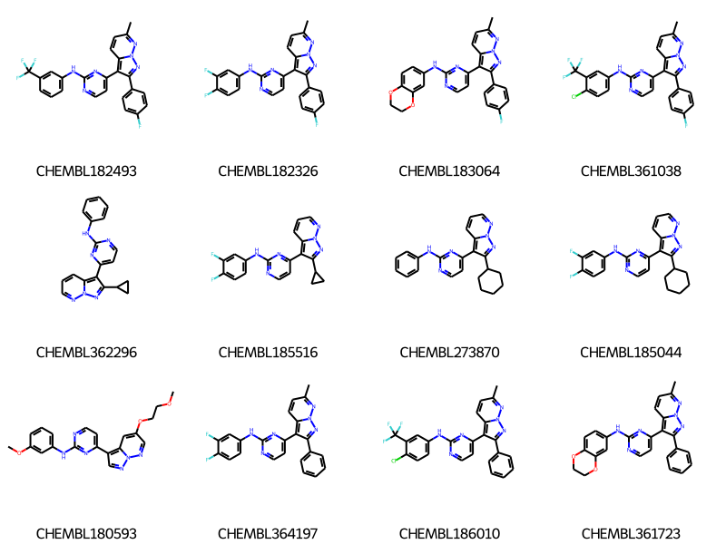
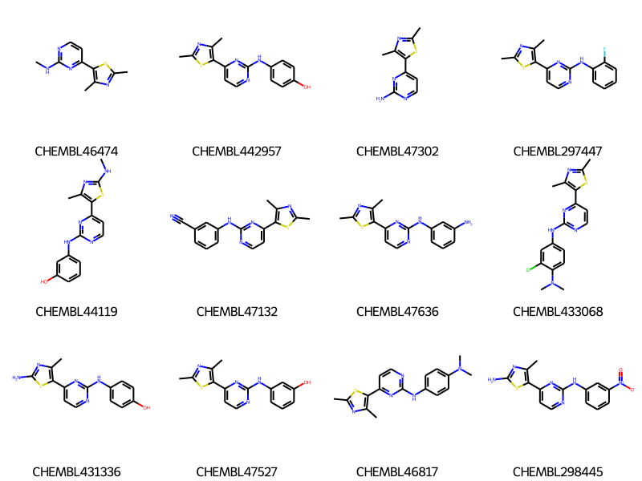
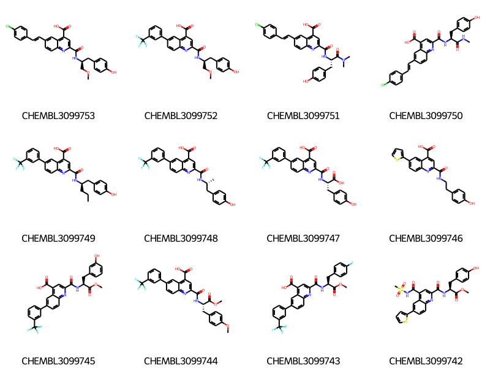

Note: This is a slightly updated version of a post from 2020
This one was inspired by a conversation that happened at the 2020 RDKit (virtual) UGM.
During Dominique Sydow’s presentation she showed some pictures of molecules with some regions of the molecule highlighted (in her case to indicate which kinase pocket they interact with). Dominique had created the images by hand, but I wanted to explore what’s possible using the 2020.09 RDKit release.
What this post is going to demonstrate is doing R-group decomposition (RGD) on a set of molecules that share a common scaffold, generating coordinates for those molecules that are aligned to the scaffold, and generating images of the molecules where the R groups are colored to make them easy to pick out.
The final images we create will look like this:
rgd-and-highlighting1-1.png
The rest of this post will go through the steps to create images like this.
Start by reading in the data we will use. This is a collection of ChEMBL compounds with Ki data measured for CDK2. The dataset includes compounds from a number of different documents and, since these are medchem papers, many of the documents contain groups of compounds that share a common scaffold.
rdDepictor.SetPreferCoordGen(True)smis = df_doc1['canonical_smiles']cids =list(df_doc1.compound_chembl_id)ms = [Chem.MolFromSmiles(x) for x in smis]for m in ms: rdDepictor.Compute2DCoords(m)Draw.MolsToGridImage(ms[:12],legends=cids,molsPerRow=4)

Define a core. I’m doing this manually and am only specifically labeling four of the seven R-groups in this set of molecules. The others will be labelled automatically by the RGD code.
Some pre-processing work we need to do: - convert the dummy atoms in the scaffold into query atoms that match anything - add hydrogens to the molecules - select only the subset of molecules which match the core - set a property on each atom which is used to track its original index (we use this later in the RGD analysis)
ps = Chem.AdjustQueryParameters.NoAdjustments()ps.makeDummiesQueries=Trueqcore = Chem.AdjustQueryProperties(core,ps)mhs = [Chem.AddHs(x,addCoords=True) for x in ms]mms = [x for x in mhs if x.HasSubstructMatch(qcore)]for m in mms:for atom in m.GetAtoms(): atom.SetIntProp("SourceAtomIdx",atom.GetIdx())print(len(mhs),len(mms))
This is the function that actually does the work of generating aligned coordinates and creating the image with highlighted R groups
from collections import defaultdictdef highlight_rgroups(mol,row,core,width=350,height=200, fillRings=True,legend="", sourceIdxProperty="SourceAtomIdx", lbls=('R1','R2','R3','R4')):# copy the molecule and core mol = Chem.Mol(mol) core = Chem.Mol(core)# -------------------------------------------# include the atom map numbers in the substructure search in order to # try to ensure a good alignment of the molecule to symmetric coresfor at in core.GetAtoms():if at.GetAtomMapNum(): at.ExpandQuery(rdqueries.IsotopeEqualsQueryAtom(200+at.GetAtomMapNum()))for lbl in row:if lbl=='Core':continue rg = row[lbl]for at in rg.GetAtoms():ifnot at.GetAtomicNum() and at.GetAtomMapNum() and\ at.HasProp('dummyLabel') and at.GetProp('dummyLabel')==lbl:# attachment point. the atoms connected to this# should be from the moleculefor nbr in at.GetNeighbors():if nbr.HasProp(sourceIdxProperty): mAt = mol.GetAtomWithIdx(nbr.GetIntProp(sourceIdxProperty))if mAt.GetIsotope(): mAt.SetIntProp('_OrigIsotope',mAt.GetIsotope()) mAt.SetIsotope(200+at.GetAtomMapNum())# remove unmapped hs so that they don't mess up the depiction rhps = Chem.RemoveHsParameters() rhps.removeMapped =False tmol = Chem.RemoveHs(mol,rhps) rdDepictor.GenerateDepictionMatching2DStructure(tmol,core) oldNewAtomMap={}# reset the original isotope values and account for the fact that# removing the Hs changed atom indicesfor i,at inenumerate(tmol.GetAtoms()):if at.HasProp(sourceIdxProperty): oldNewAtomMap[at.GetIntProp(sourceIdxProperty)] = iif at.HasProp("_OrigIsotope"): at.SetIsotope(at.GetIntProp("_OrigIsotope")) at.ClearProp("_OrigIsotope")else: at.SetIsotope(0)# ------------------# set up our colormap# the three choices here are all "colorblind" colormaps# "Tol" colormap from https://davidmathlogic.com/colorblind colors = [(51,34,136),(17,119,51),(68,170,153),(136,204,238),(221,204,119),(204,102,119),(170,68,153),(136,34,85)]# "IBM" colormap from https://davidmathlogic.com/colorblind colors = [(100,143,255),(120,94,240),(220,38,127),(254,97,0),(255,176,0)]# Okabe_Ito colormap from https://jfly.uni-koeln.de/color/ colors = [(230,159,0),(86,180,233),(0,158,115),(240,228,66),(0,114,178),(213,94,0),(204,121,167)]for i,x inenumerate(colors): colors[i] =tuple(y/255for y in x)#----------------------# Identify and store which atoms, bonds, and rings we'll be highlighting highlightatoms = defaultdict(list) highlightbonds = defaultdict(list) atomrads = {} widthmults = {} rings = []for i,lbl inenumerate(lbls): color = colors[i%len(colors)] rquery = row[lbl] Chem.GetSSSR(rquery) rinfo = rquery.GetRingInfo()for at in rquery.GetAtoms():if at.HasProp(sourceIdxProperty): origIdx = oldNewAtomMap[at.GetIntProp(sourceIdxProperty)] highlightatoms[origIdx].append(color) atomrads[origIdx] =0.4if fillRings:for aring in rinfo.AtomRings(): tring = [] allFound =Truefor aid in aring: at = rquery.GetAtomWithIdx(aid)ifnot at.HasProp(sourceIdxProperty): allFound =Falsebreak tring.append(oldNewAtomMap[at.GetIntProp(sourceIdxProperty)])if allFound: rings.append((tring,color))for qbnd in rquery.GetBonds(): batom = qbnd.GetBeginAtom() eatom = qbnd.GetEndAtom()if batom.HasProp(sourceIdxProperty) and eatom.HasProp(sourceIdxProperty): origBnd = tmol.GetBondBetweenAtoms(oldNewAtomMap[batom.GetIntProp(sourceIdxProperty)], oldNewAtomMap[eatom.GetIntProp(sourceIdxProperty)]) bndIdx = origBnd.GetIdx() highlightbonds[bndIdx].append(color) widthmults[bndIdx] =2 d2d = rdMolDraw2D.MolDraw2DCairo(width,height) dos = d2d.drawOptions() dos.useBWAtomPalette()#----------------------# if we are filling rings, go ahead and do that first so that we draw# the molecule on top of the filled ringsif fillRings and rings:# a hack to set the molecule scale d2d.DrawMoleculeWithHighlights(tmol,legend,dict(highlightatoms),dict(highlightbonds), atomrads,widthmults) d2d.ClearDrawing() conf = tmol.GetConformer()for (aring,color) in rings: ps = []for aidx in aring: pos = Geometry.Point2D(conf.GetAtomPosition(aidx)) ps.append(pos) d2d.SetFillPolys(True) d2d.SetColour(color) d2d.DrawPolygon(ps) dos.clearBackground =False#----------------------# now draw the molecule, with highlights: d2d.DrawMoleculeWithHighlights(tmol,legend,dict(highlightatoms),dict(highlightbonds), atomrads,widthmults) d2d.FinishDrawing() png = d2d.GetDrawingText()return png
Interactively try that out on all the molecules in our set:
@interact(idx=range(0,len(ms)))def draw_it(idx=0): m = mms[idx] row = groups[idx]return Image(highlight_rgroups(m,row,qcore,lbls=('R1','R2','R3','R4')))
It would be cool to do see multiple molecules at once. Unforunately DrawMolsToGridImage() doesn’t support the multiple highlighting we’re doing here (we decided that the API for that would just be too complex; this may change in the future if we can figure out a sensible API for it), so we have to manually combine the images. Fortunately the pillow package makes that easy:
from PIL import Image as pilImagefrom io import BytesIOdef draw_multiple(ms,groups,qcore,lbls,legends=None,nPerRow=4,subImageSize=(250,200)): nRows =len(ms)//nPerRowiflen(ms)%nPerRow: nRows+=1 nCols = nPerRow imgSize = (subImageSize[0]*nCols,subImageSize[1]*nRows) res = pilImage.new('RGB',imgSize)for i,m inenumerate(ms): col = i%nPerRow row = i//nPerRowif legends: legend = legends[i]else: legend ='' png = highlight_rgroups(m,groups[i],qcore,lbls=lbls,legend=legend, width=subImageSize[0],height=subImageSize[1]) bio = BytesIO(png) img = pilImage.open(bio) res.paste(img,box=(col*subImageSize[0],row*subImageSize[1])) bio = BytesIO() res.save(bio,format='PNG')return bio.getvalue()
Now let’s look at the first 16 molecules in the dataset:
smis = df_doc2['canonical_smiles']cids =list(df_doc2.compound_chembl_id)ms = [Chem.MolFromSmiles(x) for x in smis]for m in ms: rdDepictor.Compute2DCoords(m)Draw.MolsToGridImage(ms[:12],legends=cids,molsPerRow=4)

core = Chem.MolFromSmiles('Cc1nc([*:3])sc1-c1ccnc(N([*:1])[*:2])n1')ps = Chem.AdjustQueryParameters.NoAdjustments()ps.makeDummiesQueries=Trueqcore = Chem.AdjustQueryProperties(core,ps)mhs = [Chem.AddHs(x,addCoords=True) for x in ms]mms = [x for x in mhs if x.HasSubstructMatch(qcore)]for m in mms:for atom in m.GetAtoms(): atom.SetIntProp("SourceAtomIdx",atom.GetIdx())print(len(mhs),len(mms))rdDepictor.SetPreferCoordGen(True)rdDepictor.Compute2DCoords(qcore)qcore
Finally, do another document, just because it’s fun. :-)
smis = df_doc3['canonical_smiles']cids =list(df_doc3.compound_chembl_id)ms = [Chem.MolFromSmiles(x) for x in smis]for m in ms: rdDepictor.Compute2DCoords(m)Draw.MolsToGridImage(ms[:12],legends=cids,molsPerRow=4)

core = Chem.MolFromSmiles('OC(=O)c1cc(C(=O)NC(C[*:1])[*:2])nc2ccc([*:3])cc12')ps = Chem.AdjustQueryParameters.NoAdjustments()ps.makeDummiesQueries=Trueqcore = Chem.AdjustQueryProperties(core,ps)mhs = [Chem.AddHs(x,addCoords=True) for x in ms]mms = [x for x in mhs if x.HasSubstructMatch(qcore)]for m in mms:for atom in m.GetAtoms(): atom.SetIntProp("SourceAtomIdx",atom.GetIdx())print(len(mhs),len(mms))rdDepictor.SetPreferCoordGen(True)rdDepictor.Compute2DCoords(qcore)qcore